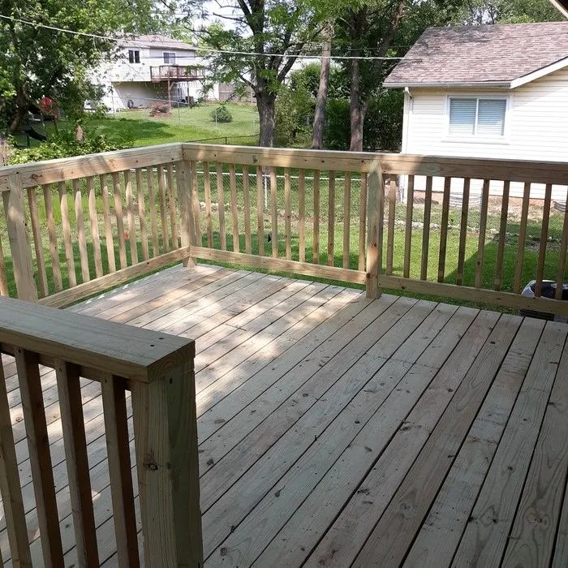
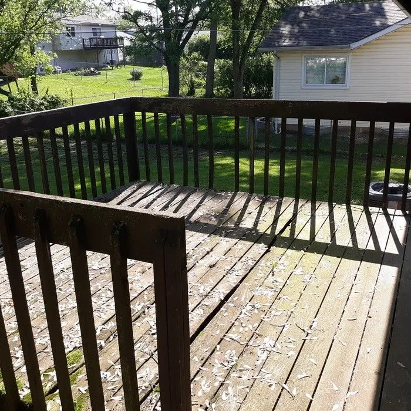

Deck repair in St. Louis
Rotted boards. A railing that moves when you lean on it. Stairs that shift underfoot. A soft spot in the middle of the deck. Every one of those has a specific cause, and every one of them is fixable. We find what actually failed, repair that, and leave the rest of your deck alone.

Deck repair & board replacementDeck problems we fix every week
If your deck is doing any of these, it is telling you something specific has worn or failed. That is a repair, not a replacement.
Rotten or splintered boards
Rot at the board ends, cracks along the grain, splinters that catch bare feet, and cupping after enough freeze and thaw cycles.
Wobbly railings
A railing you can rock is a railing that needs its post connections rebuilt, not a whole new deck.
Loose stairs and steps
Treads that flex, a stringer that has softened where it meets the ground, and landings that have settled out of level.
Soft or bouncy spots
A spongy patch underfoot points to a joist, a hanger, or a ledger connection that needs attention.
Sagging or separating decks
A deck pulling away from the house, or dropping at one corner, usually traces back to one support or one footing.
Decks that failed an inspection
Railing height, baluster spacing, stair geometry, and ledger attachment brought current so the next look goes cleanly.
Rotten, cracked, and failing deck board replacement
Deck boards take the weather first, so they are almost always the first thing to go. Rot at the ends where water sits, cracks along the grain, splinters that catch bare feet, cupping and warping after enough St. Louis freeze and thaw cycles: nearly all of it is surface damage sitting on top of a frame that is still perfectly sound.
We pull the boards that have failed, match the replacements to what is already on the deck, and leave the structure underneath where it is, because it does not need us. In most cases you would never pick out which boards are new. It is the fastest and most affordable deck repair there is, and it takes a deck that looks past its prime and makes it look new again.
Wobbly railing repair, loose stairs, and rebuilt steps
A railing you can rock is a railing that has stopped doing its job, and the cause is usually how the posts are attached rather than the railing itself. Stairs work the same way. Treads that flex, a stringer that has softened at the bottom where it meets the ground, a landing that has settled out of level: those are specific, findable failures with specific fixes.
We rebuild the connection properly, set the posts so they hold, and bring the geometry current on the way through. Riser height, tread depth, baluster spacing, railing height, and the hardware tying it all together. When we leave, the whole run is solid and safe to use.
Soft spots, bounce, and sagging deck structure
When a deck bounces or gives underfoot, the story is under the boards. A joist that has taken on water, a hanger that has corroded, a ledger connection working loose from the house: any of those show up on the surface as a soft spot well before anything visible changes.
So we get underneath. We find which member is carrying less than it should, and we replace or reinforce that member. The rest of the frame stays exactly where it is. This is the part of deck repair that is worth doing early, because one joist is a small job and a whole bay of them is a bigger one.
Structural deck repair: beams, posts, and footings
This is what separates a deck repair company from a deck replacement company. Replacing a failing beam or a rotted support post can mean carrying the full weight of the deck on temporary supports and working underneath it while you do. It is highly technical, it is genuinely dangerous, and it is the reason a lot of companies will tell you the only option is to tear the whole thing down and start over.
We take that work on. We shore the deck, replace the beam, post, or footing that actually failed, and hand back a structure that is sound for years. A targeted structural deck repair regularly comes in up to 75% less than a full replacement, which is thousands of dollars staying with you on a deck that only ever needed one thing fixed.
A failing beam looks like the end of a deck. It is almost always one specific problem inside an otherwise solid structure. The skill is in finding it, and then in having the willingness to go fix it.
The same thinking covers sinking footings, posts that have rotted at grade, decks separating from the house at the ledger, and framing that was undersized when it went in. We diagnose it, we price the fix against the alternative, and you decide with real numbers in front of you.
Bringing older decks up to current code
A lot of decks around St. Louis went up before today’s standards, and the details that changed are exactly the ones that matter: how the deck attaches to the house, railing height, baluster spacing, stair geometry, and the hardware holding it together.
When we repair a deck, we bring those details current. If your deck is heading toward a sale, a refinance, or an inspection, that is the difference between a clean pass and another round of work. If you want that assessment before you commit to any repair, we also offer a paid deck safety inspection.
When a deck rehab is the better fix
Sometimes the honest answer is that you are past fixing things one at a time. If the boards are going, the railings are going, and the stairs are next, repairing each separately adds up to more than doing them together.
That is a deck rehab. We keep the framing and footings that are still solid, replace everything that has failed, and hand back a deck that looks new. For most St. Louis homeowners a rehab lands 25 to 60% under the cost of a full replacement, and often the smartest repair is a full rehab. See how deck rehab works.
What a repaired deck looks like
Same structure, same footprint, new life. This deck was one estimate away from being torn out.

Structure repaired · boards replaced · railings rebuilt to code
Deck repair across St. Louis County and St. Charles County
We handle deck repair throughout West County, including Ballwin, Chesterfield, Ellisville, Wildwood, Town and Country, and Des Peres, along with Valley Park, Eureka, Grover, and Pacific. In Mid County we are regularly in Kirkwood, Webster Groves, Brentwood, Clayton, and Richmond Heights, where the decks are older and the repairs tend to be more interesting. South County covers Mehlville and Oakville, and we work throughout St. Charles County as well.
Every one of those visits starts the same way. We walk the deck with you, get underneath it, and show you what is actually failing, because a soft board and a failing beam are completely different jobs. See the full service area.
Questions we get about deck repair
Can rotten or failing boards be replaced without redoing the whole deck?
Yes, and it’s some of the most common work we do. Rotted, cracked, splintered, or warped boards get pulled and swapped for new ones, while the solid structure underneath stays right where it is. In most cases you’d never know only part of the deck was touched when we’re done. It’s the fastest, most affordable way to take a deck that looks past its prime and make it feel new again.
My deck feels wobbly or has a soft spot. Can that be fixed?
Usually, yes, and it’s worth having us look sooner rather than later. A wobbly railing, a bouncy or soft spot underfoot, stairs that feel loose, those are all signs that something specific has worn or failed, not necessarily that the whole deck is done. Often it comes back to a support, a connection, or a section of framing that needs attention. We find what’s actually causing it and fix that, so your deck is solid and safe to walk on again.
Do you bring older decks up to current code?
Yes. A lot of older decks were built before today’s safety standards, and small things like railing height, spacing, stair construction, and how the deck attaches to the house all matter for safety. When we work on a deck, we bring those details up to current code so it’s safe for your family and holds up if it’s ever inspected. If we spot something that isn’t right, we’ll point it out and tell you what it takes to fix it.
My deck has a failing beam or support. Do I need a whole new deck?
Almost never. A failing beam, a rotting support post, or a sagging section feels like the end of a deck, but it’s usually one specific problem in an otherwise solid structure. Structural work like this is highly technical and genuinely dangerous. Replacing a beam can mean lifting the entire weight of the deck and working underneath it, which is why a lot of companies won’t take it on and will tell you the whole deck has to come down instead. We will take it on. We go in, fix the actual failure, and leave you with a deck that’s structurally sound for years, often for up to 75% less than a full replacement. It’s some of the most demanding work there is, and some of the most worth it, because it saves people thousands they were told they had no choice but to spend.
Do you offer free estimates?
Yes, always. We’ll come out, walk your deck with you, listen to what you’re trying to accomplish, and give you a clear, honest assessment of what it needs. No cost, no obligation, and no pressure to decide anything on the spot. Even if it turns out the fix is simple, you’ll walk away knowing exactly where your deck stands.
Tell us what’s failing. We’ll tell you straight.
Send a few details and we’ll get you a free, honest deck repair estimate, an accurate look at what your deck actually needs.